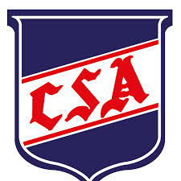
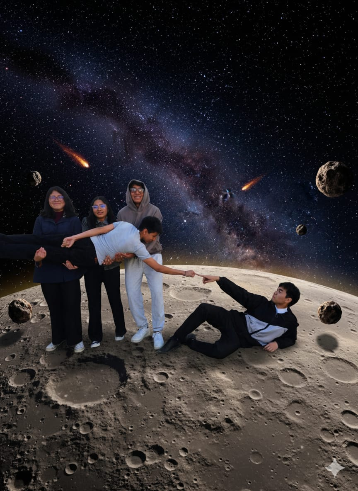

11 de noviembre de 2007 • Sucre, Bolivia
Soy una persona comprometida con mi formación académica y con un gran interés en la tecnología.
Nivel primario:
Unidad educativa Gran Mariscal de Ayacucho

Nivel secundario:
Unidad Educativa Santa Ana

Escogí la carrera de Ciencias de la Computación en base a la experiencia que tuve en la hackatón de la NASA Space Apps Challenge y también que desde pequeño me intereso el mundo de la tecnología. Al principio entré por invitación de un amigo, sin tener muy claro de qué se trataba. Sin embargo, conforme fui asistiendo a los talleres y charlas de la hackatón, comencé a interesarme cada vez más .
La experiencia me gustó mucho, ya que fue algo diferente a lo que estaba acostumbrado y me permitió descubrir habilidades que no sabía que tenía. Por eso decidí que quería estudiar algo relacionado con esa experiencia. Investigando y consultando con ChatGPT, pensé que lo más parecido era Ingeniería en Sistemas
Pero, un amigo que estudió esa carrera me comentó que no era exactamente como yo imaginaba, lo que me desanimó un poco.
Tiempo después le pregunté a otro amigo qué carrera pensaba estudiar, y me mencionó Ciencias de la Computación. El nombre me llamó la atención, así que empecé a investigarmás a fondo. Revisé la malla curricular y me gustaron mucho las materias que se llevan,especialmente las relacionadas con programación y tecnología en general.
También investigué en qué áreas pueden trabajar los profesionales de esta carrera y descubrí que existen muchas oportunidades laborales, tanto a nivel nacional como internacional.Finalmente, me decidí por completo cuando vi el campo laboral que tiene la carrera, los salarios que se pueden alcanzar con experiencia y especialización y que ya se puede empezar a trabajar como desde el 5to semestre, y la posibilidad de trabajar de manera remota. Todo esto, junto con la experiencia í en la hackatón, confirmó que Ciencias de la Computación es la carrera que realmente quiero estudiar.